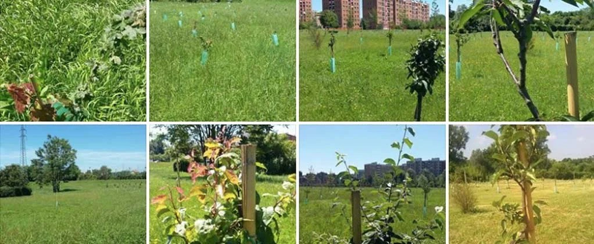

Che cos'è

Le edizioni in numeri
Dal 2024 Alberi per il futuro non ha più un solo promotore: la portano avanti gruppi di attivisti di associazioni diverse. Il seme dell'idea è sbocciato su più fronti, e oggi chiunque può organizzare la propria giornata nel proprio Comune: un'associazione, un comitato di quartiere, una scuola, un gruppo di cittadini.
Questo sito continua a sostenere i gruppi con il formato comune e le indicazioni da seguire, uguali per tutti, e con le lettere pronte. Vai al formato
Le foto
Come si fa, passo per passo
È il formato comune dell'iniziativa: vale per qualsiasi anno e per chiunque la voglia organizzare, un'associazione, un comitato o un gruppo di cittadini. Bastano poche persone e un'area pubblica: il Comune dà lo spazio e il permesso, gli alberi si possono avere gratis da un vivaio pubblico. Contate circa due mesi dalla prima lettera alla piantumazione.